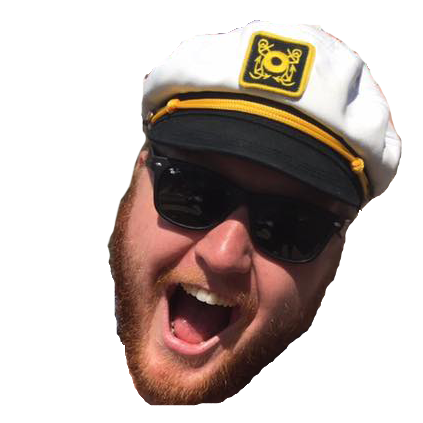
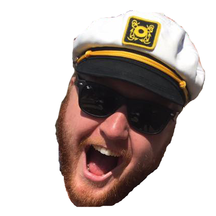
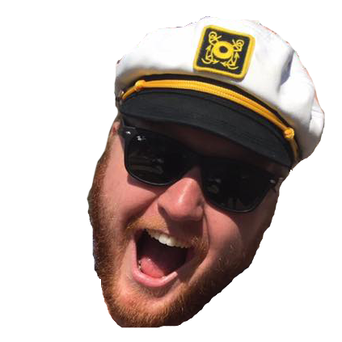
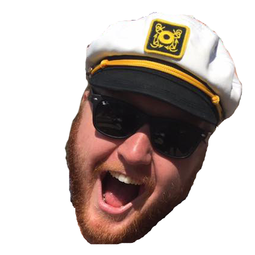

Weekly Power Rankings


 



 


Owner: Forrest Olson
2016 Record: 6-0
Position Last Week: 1
How is this actually happening? TAIMYJ turns in their lowest scoring game to date this season but still manages to find a way to stay undefeated. Although Cam tasted some CTE during his last game he came out firing on all cylinders for a team leading 26 points. Although TAIMYJ had 5 players not crack single digits, they got some help from the Jets and Ryan Fitzpatrick letting the Cardinals defense log 11 points. DeMarco continues to shine tallying up another touchdown, and AJ grabbed 11 points himself as TYIMYJ escape the Trumpsters as they head into a scrappy game against the Hecklers that may spawn into a scruffle at Standard come Sunday morning if history plans on repeating itself.

Owner: Danny Moore
2016 Record: 4-2
Position Last Week: 3
Although Brandin Cooks and Andrew Luck were able to post 26.5 and 23 points a piece, and David Johnson made a strong push during MNF with 20 points in the first half, the rest of the Butt Tuggers decided it was best to stay in the locker room against one of the more feisty teams in the league. K Dan Bailey outscored 5 other teammates this week, and if you french fry when you’re supposed to pizza, you’re going to have a bad time (ya today we talked about snowboarding and skiing in the group and I needed that quote in my write-ups tonight). David Johnson couldn’t keep production up in the 2nd half, and Tuggers begins the inevitable slide going into the matchup of the state of Iowa against the Savages of QC next week.

Owner: Nate DuBois
2016 Record: 4-2
Position Last Week: 4
I for one am officially a little scared of this team. Brees and McCoy swung their dicks all over Tuggerfucker’s face pouring in 32 and 33 points respectfully, while Terrance West was not to be outdone with 25 of his own. Mason Crosby dropped in 3 FGs and an extra point to be a double-digit kicker, while his teammate, and team name extraordinaire, Randall Cobb grabbed a TD along with 7 receptions for double-digit points of his own. Good luck next week Baja Men, you’re going to need it.

Owner: Frank Herrera
2016 Record: 4-2
Position Last Week: 2
I enjoy watching fires burn – especially ones courtesy of the resident Mexican and his Trumpster Fires. TYIMYJ left the door wide open for comparisons sake, but outside of Julio Jones grabbing a mediocre 22.5 points the rest of @Gerry Gardner’s team just seemed to go through the motions this week. K Adam Vinatieri outscored 4 position players and tied another while also trumping (see what I did there) the Titans defense this week. Things may get easier next week for the Trumpsters as they visit Diggs gon’ Digg, but if @Dale decides he wants to make the trip to Chicago and discuss tinkering options with other league members there’s really no telling what could happen at Standard on a Sunday afternoon as we’ve learned from past experiences.

Owner: Garett Prusha
2016 Record: 4-2
Position Last Week: 5
With 5 players in double digits this week, including Lamar Miller getting a rushing and receiving touchdown under his belt, the Savages continue to hover around that 4th place in the league mark. Week in and week out the Savages are torn during WDIS with a plethora of WRs, and this week rolled the dice and made the right choice while Crabtree only was able to grab 2 points, but was still bested by Demaryius Thomas’ 3.5 who got the starting nod. Next week, during the battle of Iowa, the Savages need to find a way to knock off and jump the Tuggernutterfuckers in the standings who are coming off just their 2nd loss of the season.

Owner: Kevin Jachim
2016 Record: 2-4
Position Last Week: 7
I don’t even know what to say. The Carolina Panthers were just in the fucking Super Bowl and outside of getting rid of the most overrated corner in the NFL, they have managed to digress like crazy and were good enough for -6 points! The blind loyalty to Bortles still hasn’t managed to pan out, and although he played the miserable Bears, only mustering 10 points didn’t help the cause. #FeastMode continues to disappoint without having registered a rushing touchdown this year, along with Emmanuel Sanders getting outscored by Cole Beasley on the bench puts the Hecklers into a tough spot moving forward. On the plus side, diva boy ODBJ finally proposed to that fucking net while making strides with 36 points, but it was too little too late against the high flying Steamers this week.

Owner: Ryan Schneider
2016 Record: 2-4
Position Last Week: 8
WE WANT KIRK! WE WANT KIRK! @Caleb put the damn group on his back and gave everyone what they have been asking for a long time coming. Although Carson had himself a very mediocre MNF performance, the rest of the Baja Men did what they needed to do, especially Coby Fleener finally breaking out down south against that abysmal Carolina defense. Gurley and Howard both managed to muster up double-digit points, while TY and Maclin split 11 points down the middle. The Eagles D couldn’t pull out a win, but were able to score 2 touchdowns and grab 9 fantasy points in what ended up being the 2nd win on the schedule, and looking up for weeks to come.

Owner: Chris Noonan
2016 Record: 2-4
Position Last Week: 6
#DownWithDean #KirkFucks #DoesHeHaveToChangeHisTeamNameNowToo? Hashtags I’ve been waiting to type out all day long. Brandon Marshall couldn’t turn in a Monday night for the ages, and every single player that Dean started this week didn’t break into double digits besides the NFL’s leading rusher. CJ “My OL can’t block for shit” Anderson got Fux off to a hot start, and then got bit by the injury bug from Big Ben, which then transferred into the Steelers D coughing up a cool -4 points. Kirk is back, now let’s see if repeat makes an appearance in Chicago this weekend #LookingAtYouKGalls

Owner: Kyle Marxkors
2016 Record: 1-5
Position Last Week: 10
With 1 Cleveland team already posting a championship in 2016, and another in the midst of a sensational run, who’s to say the Steamers can’t right the ship and make a run of their own? With the obvious help from another owner who should not be named, the Steamers have managed to put up some serious numbers. Captain Brady is back and is ready to resurge the Kill Everyone Tour, while Jonathan Steward emerged after being bit by the injury bug and Giovani Bernard, now on his 3rd team this season in this league, came to play after seeing Jeremy Hill grab an injury of his own. Amari Cooper continues to be sneaky dece AF this season as well. Don’t look now, but if Jay Ajayi can crack @Peaches’ starting lineup and keep up the production he had this week then the rest of the league may just be in some serious trouble.
Owner: Chris Comstock
2016 Record: 1-5
Position Last Week: 9
@Dale didn’t help his cause having 2 bench players outscore starters this week, which would have been enough to knock off the Savages and grab his 2nd win of the year. The Packers D didn’t do any favors letting America’s team rack up 30 points Sunday afternoon, and Tevin Coleman had his worst game to date to highlight some of the plagues on Diggs’ roster. As Diggs continues to hoard TEs, the rest of the league (me) continues to wonder if he’ll ever figure out how the functions of our fantasy league actually work and maybe improve his roster as we near the second half of the season. Will @Dale and @Peaches make their way to Chicago this weekend and get a crash course on how 2016 Fantasy Football works? Only time will tell.